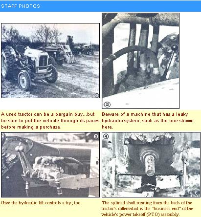

The best sources of information for the first-time tractor buyer (sources which, for some reason or other, most such people ignore) are the very farmers in his or her area who are already raising the kind of crops that the beginner aims to grow. So, when you're faced with the need to purchase one of the expensive implements, begin the search by visiting your neighbors.
Note the make and size of the tractors they're using, and ask for evaluations of the machines. (A pleased owner will often be fiercely loyal to his or her "pet" brand, but someone who feels that he or she has been sold a "lemon" will likely fill your ear with all sorts of horror stories. Use a little common sense when weighing extreme opinions, and you'll learn a lot.) Ask, too, about the attachments each farmer owns ... in order to learn which accessories were a waste of money and which he or she wishes had been bought but weren't.
Working farmers can tell you a lot about tractor dealerships, too. And the quality of the dealer is every bit as important as is that of the machine itself! Try to determine which sales outlets have good stocks of parts and reputations for quick service. I once had a tractor broken down for two full days-at the height of my busy season - because the dealer didn't have a two-cent packing washer for the machine's hydraulic system.
In fact, it's a good idea to buy a brand of tractor that's supported by two dealerships within a few hours' drive of your home. Then, if the closer establishment can't supply a part you need, you may still be able to keep your machine up and running by going to the other dealer in search of the required part.
You may well be surprised to know that it's possible to buy a small farm tractor that's specifically designed to handle just about any task you can imagine. However, the two most common tractor types - and those that'll most likely satisfy the needs of the new farmer - are the utility tractors and the general purpose (also called "row crop") tractors.
Utility tractors are typically low and squat-looking. (A common example, in the lower price ranges, would be one of the Ford 8-N's manufactured in the 1950's.) Utility tractors are designed for pulling and powering implements - such as hay mowers, balers, disk harrows, and trailers - that are attached to either a hitch or a lifting mechanism at the rear of the tractor.
If you don't intend to do any multi-acre rowcrop farming, a utility tractor can be a good investment. However, even though the machines can be used for plowing and cultivating fields, they certainly don't make such jobs easy. The towed-behind attachments necessary to tend row crops with a utility tractor will force you to drive with one eye on the cultivators (for instance) and the other on the row ahead. You'll find that such a setup will sometimes cause you to plow up more peas than weeds ... and give you a backache, to boot.
The general-purpose tractor, on the other hand, can perform almost every job that a utility machine is capable of tackling, yet it's designed to care for row crops. Such tractors have greater ground clearance than do the utility models, a feature that allows them to straddle rows of crops - while cultivating the field - without disturbing the plants beneath them. General purpose tractors also usually carry their attachments between the front and rear wheels, and frequently have their engines set off slightly to the left ... allowing a driver to look down and make sure the cultivator or other implement is exactly where he or she wants it.
In addition, the distances between the left and right wheels of row-croppers can often be adjusted ... allowing the machines to be used to tend crops that require a variety of row width settings, and enabling you to get the maximum use out of your property and your tractor.
General-purpose tractors are either single-row or multiple-row (the latter are always designated in even numbers) machines. The one-row models, of course, are smaller and usually have the front pair of wheels in line with the rear set. Multiple-row tractors sometimes use a "tricycle" arrangement in which the front tires are placed close together. The larger machines can make short work of big level fields but are also relatively cumbersome and difficult lc maneuver ... while the tricycle wheel arrangement is somewhat less stable than is the "four-square" pattern common on single-row models.
Almost all tractors available today are powered by either gasoline or diesel engines. (You will occasionally see tractors for sale that are fueled by LP - liquid propane - gas, often at very low prices. But unless you can be sure such machines are in prime condition, be wary of them. Parts are scarce, and, after buying one, you could well find yourself stuck with an inoperative "classic".)
The engine in a gasoline-fueled tractor is essentially the same as those found in most automobiles, but the farm implement's powerplant will likely run at a lower RPM and produce more torque per unit of displacement than will an auto engine. Most tractors have relatively low horsepower ratings, too. Don't be misled by this fact: A 20- to 30-HP machine will be more than adequate to handle the chores demanded by a family farm.
A diesel-engined tractor has both advantages and disadvantages as compared to gasoline-powered machines. For one thing, since a diesel engine is "fired" by the buildup in engine compression caused by the movement of the pistons, it doesn't require the points, distributor, and spark plugs-nor the adjustment and/ or replacement of such parts-necessary to a gasoline powerplant.
And, though diesel tractors usually cost more initially than do comparable gaso line-fueled machines, they're less expensive to operate. Diesel oil is still not as costly as is gasoline, and tractors powered by the "bargain" fuel tend to get more work done per gallon than do their gasoline-engined counterparts. Finally, a typical diesel tractor will both outpull and-if carefully maintained, with special attention paid to regular cleaning and replacement of the air, oil, and fuel filters- outlast a gas-powered machine of the same size.
Perhaps the single most annoying drawback of diesel-fueled tractors is their tendency to be difficult to start on cold mornings. Since they're fired by the heat built up by compression in the engine, a good bit of battery power is required to turn the pistons long enough to get a start in cold weather. And, of course, chilly temperatures tend to drain battery power ... in effect adding insult to injury.
However, newer diesels often feature "glow" or heat plugs, which, at the flip of a switch, start to warm the cylinders. After a minute or so of such priming, the engine can usually be cranked and fired with much less difficulty than would otherwise be encountered. Furthermore, heat plugs can be installed on diesel tractors that don't come equipped with them.
The power takeoff unit - the "business end" of which is a splined shaft running from the back of the tractor's differential - is used to power such attachments as hay balers and mowers The PTO will run off the differential or the engine itself, and is engaged by a combination of its own lever and the tractor's clutch.
There are two types of PTO ... "standard" and "live". The latter is generally considered more versatile, since it can be operated while the tractor isn't moving as a result of the clutch's being disengaged.. . while a standard unit will work only while the machine is in motion - or in neutral - with the clutch engaged. Therefore when, for example, a "live PTO" tractor's hay baler encounters a large stack of to-be-bound fodder, the operator can, on some models, simply press the clutch in halfway... bringing the tractor to a stop while the baler handles the pile of hay. With either type of system, the PTO should work when it's engaged, and stop completely when disengaged. If the shaft continues to rotate slowly after disengagement, you can bet that the PTO gear is worn and will require a (probably costly) repairjob!
Another feature that should be checked before making a purchase is the tractor's lifting system ... which will be either a spring (In older, mostly pre-1950, models) or a pump-driven hydraulic system.
If your chosen machine is of the latter type, go over the system very carefully for leaks ... and beware of any tractor that shows a lot of hydraulic-fluid seepage (the liquid will be a very light, about 10-weight, oil). Before laying your good money down, give the lift a try, too. Hitch a heavy implement to it, then push the lever that operates the lift. If the unit jerks, slips, or wheezes while raising its burden, it may be low on oil (which could be a sign of a leak or of less-than-perfect maintenance). Should the fluid level be correct, though, the same symptoms will indicate that the hydraulic system is badly worn ... and that the tractor should be crossed off your potential buying list!
Some row-crop tractors have dual hydraulic cylinders ... which are worthwhile in that they allow the tractor's operator to vary the depth of the front and rear cultivators if necessary. Be on the lookout, also, for a machine with a hydraulic hose coupling, since this feature will allow you to use some of the more recently manufactured hydraulic implements.
Once you've decided upon the features you need - and thus narrowed your list of acceptable tractors - you'll be ready to enter the market. But before buying, take the time to get the feel of prices in your area by reading a few weeks' worth of classified ads, and visiting the used equipment lots of nearby dealers. Remember, while doing so, that the price of a used tractor purchased from an individual will be lower than that of a new or used machine bought from a dealer ... but that even older models acquired from reputable dealerships will generally have undergone at least some renovation during their stay in the shop.
If you're buying a used machine, approach the purchase as you would that of a previously owned car or truck. Check the tires (replacements for the rear wheels could set you back $200 apiece, or more), and be sure the engine has good compression. Remember, as well, to start the machine up a few times, drive it around (listening carefully for unusual noises), and generally put it through its paces ... to see how it will handle the lobs you'll later ask it to do.
When buying a used tractor, it's also usually a good idea to purchase as many of the accessories and implements offered with it as you think you might need... even those that could come in handy a bit into the future. It'll often be difficult to find such equipment later... especially if some of it was made expressly for your older tractor. However, remember to let the information picked up while comparing notes with other area farmers help you choose ... since the man or woman who's selling you the tractor could well have been talked into buying unnecessary gadgets when he or she first purchased the machine.
With a good bit of common sense, a little caution, and the information I've tried to provide in this article, you ought to be able to buy a small farm tractor that suits your pocketbook and your farming needs. With luck, you'll be so pleased with your first purchase that you'll become a strong defender of the brand, whatever it may be. Who knows, you might even become one of those fortunate individuals who - despite the moans and groans with which he or she describes the farmstead workload when talking to friends and relatives - is always on the lookout for an excuse to take a tractor ride!
|
 Thoroughly inspect any tractor you're considering. |
|
|